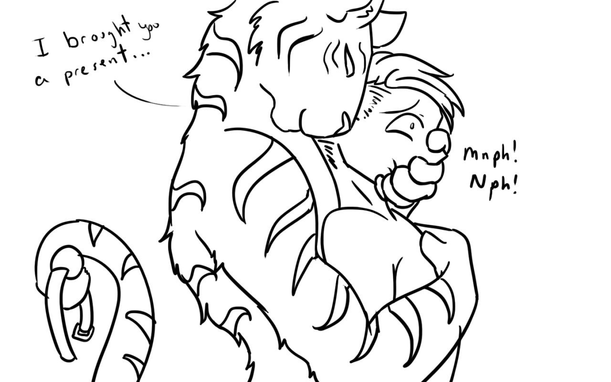

No Harm, No Foal
Written by TwistedSnakes
Commissioned and Illustrated by WolfintheWalls
A blue Mustang sped down the highway as it made its way through the winding hills. In the driver's seat and passenger seat were a tiger and a human respectively. The tiger was tall and muscular, dwarfing the human as he stood a head taller than him.
"Hey Ib, you excited?" with one eye on the road and one hand on the steering wheel, the pale-orange-furred tiger turned slightly to look at the human.
Ibrahim grinned. Excited didn't come close to describing the anticipation he felt as sped along the highway. He had been waiting to try on a rubber pony suit Zasko had custom ordered to fit him since the tiger had ordered it eight months ago. It was delivered to Zasko's place three weeks ago but their hectic schedules never had any free slots in common.
Well, not until today. They were both going for the Mid-east Fur Feast convention in three day's time so they arranged to meet up earlier for a little fun time. The convention was big, and furs would dress in human clothes and humans would dress in furry outfits for endless roleplaying, but for now, the two of them would have a little dressing up of their own.
"Yeah," Ibrahim nodded, still holding the smile. Zasko turned to him again and smiled back. A furry paw moved over to Ibrahim's thigh and patted him there, eliciting a soft giggle from the human.
"H-hey, it tickles there," he stammered.
"Oh, how about here?" the tiger moved his paw further up Ibrahim's leg and onto his crotch where a bulge was waiting in anticipation, giving it a gentle squeeze.
Ibrahim blushed uncontrollably at the tiger's audacity. "Hey, what if people see us?" he protested but left the paw where it was.
"Let them watch," the tiger shrugged as he continued his crotch massage.
"So, what are we going to try today?" Zasko said slyly, opening his closet of bondage equipment and going through his shelves of bondage gear sorted by type, size, and colour. "I got a 'Good Lizard' dildo here, an inflatable gag, and oh, what's this? Leather collars!" he held the toys up for Ibrahim to see.
"Stop messing around Zaz," the human poked the tiger in the ribs. "You know what we're here for."
"Whoa chill," he feigned a hurt expression and pretended to flinch from the human's hard nudge. "I thought you wanted to play with all the toys I got for you over the past year."
"Yes, but that can come later," Ibrahim said in a mixture of impatience and jest. "I've been waiting forever for this thing." He pulled himself against Zasko's furry chest and put his arms around the tiger's waist. "Are you gonna stand between me and that pony suit?" he put on a sad face as he looked up at the tiger.
Zasko blushed awkwardly as he placed the toys back on the shelf. "Haha fine, you win," he extracted himself from Ibrahim's embrace. "It's over here," he said as he pulled a cremello rubber suit out of a box carefully stashed in the corner of his closet. Its latex sheen reflected in the afternoon light and Ibrahim could feel himself getting a hard-on just looking at it.
Zasko handed Ibrahim the suit, who hastily stripped in front of him and quickly put on the suit. "Hey hey hey, nudity warning please!" the tiger quipped, shielding his eyes with his paws.
"Don't be silly," Ibrahim punched the tiger in his abs, causing him to gasp in shock. "You've seen my dick a thousand and one times now."
"Well a thousand and two times' the charm," Zasko rubbed his abs. "Oww that actually hurt."
Ibrahim ignored the tiger. "What do you think?" he asked, spreading his arms and turning around. Not an inch of skin showed from his neck downwards as the suit came with gloves and feet sewn on, tightly clinging on to the human's athletic body.
"Mmm, I like," the tiger licked his lips as he stepped behind Ibrahim and held the zipper, gently zipping it close behind him before rubbing his paws over the human's rubber-clad body. "You look good in rubber," he complimented.
Ibrahim was staring at his shiny body through the mirror hanging on the closet door. His dick had given him away, forming a round bulge in the front pouch of the suit. "You say that about everything," he looked up at the tiger and teased.
"Oh but you look especially good in rubber," Zasko emphasized the word "especially". Ibrahim smirked and went back to admire himself in the mirror. The tiger says that about everything too. Zasko continued to stroke Ibrahim's body with his soft paw pads, occasionally giving the bulge in front a gentle but firm squeeze.
"Ready for the mask?" Zasko finally broke the spell. Ibrahim nodded, and the tiger pulled out a rubber hood painted to look like a horse's head. Its colour was a different tone from that of the suit but Ibrahim didn't mind. "Looks cute," he shrugged cooly, hiding his anticipation behind a smug grin.
"I'll help you," Zasko offered, unzipping the back of the hood and helping the human into it. Ibrahim looked at the results in the mirror. Apart from his eyes, every inch of him was covered in a cream-coloured latex sheen. "Looking good," the tiger grinned, and Ibrahim nodded in response.
"I almost want to keep you," the tiger said, grabbing Ibrahim by his waist, lifting him up and throwing him onto the bed. He jumped onto the bed beside Ibrahim and pulled him into an embrace.
He picked up a magic wand and pressed it against Ibrahim's bulge as he turned the vibration on. Ibrahim felt the vibrations travelling through his body, rubbing his tight latex suit against his skin. "Mmm," he moaned softly, feeling the tiger pull up onto his furry chest.
Zasko stroked the bulge with the end of the magic wand, gradually circling around the top of the bulge where the base of Ibrahim's dick was, moving slowly down his shaft teasingly. Ibrahim's arms were behind his back, gripping the tiger's body tightly as he rocked his hips gently with the circling motion.
The edging went on for a few minutes before Zasko brought the vibrator closer to the bottom of the bulge where it stimulated the tip of Ibrahim's dick and balls and turned the power up. "Nghn," the human gasped in pleasant surprise, pulling the tiger's fur harder.
Zasko pressed the vibrator firmly against Ibrahim's balls, causing him to shudder involuntarily as his mouth opened in a silent moan. The pressure was released for a moment before the vibrator was nudged against the human's balls again. The tiger's free paw started stroking and massaging Ibrahim's chest, squeezing gently against his pecs in rhythm with the nudging.
Zasko grinned at Ibrahim who was thrusting his hips, lost in his own world of euphoria. Ibrahim's legs were wrapped around the tiger's, and his hands were above his head as he held on to the back of the tiger's neck. "Don't stop," he gasped at Zasko.
Ibrahim could feel himself coming closer to the edge as he rocked his hips, oblivious to everything but the paw on his chest and the vibrator against his crotch. Nothing else mattered now. "Hnng!" he grunted, thrusting his hips upwards a few times as he blew his load into the rubber suit.
Panting, he slumped back against the tiger. Zasko turned off the magic wand, letting it drop on the bed as he dedicated his hand to stroking Ibrahim's warm bulge. The two of them remained there for a while, lost in a trace as they fell asleep.
Ibrahim woke up to the soft and sleepy stroking of the tiger's finger in circles on his chest. "Mmm just woke up?" he asked the Zasko.
The tiger nodded dreamily. "Well," he mused, "do you want to try some actual pony play?"
Ibrahim perked up at the suggestion. "Yeah, sure. What do you have in mind?"
"Ungh!" the tiger pushed himself off the bed and rummaged in the box. Some cream-coloured leather straps and buckles were taken out of the box, matching the colour of the suit. Wooden white hooves complete with silver horseshoes were laid out on the bed and Ibrahim kneeled on the bed as he watched in interest.
"Ready?" Zasko grinned at Ibrahim, who nodded and stretched out his rubber-gloved hand at the tiger. Zasko shook his head and made a spinning motion with his finger. "Turn around," he instructed.
Ibrahim complied and turned around. Suddenly, a muscular arm wrapped under his arms and around his chest and another paw grabbed his wrist, pulling it to his shoulder. "Hey," Ibrahim squirmed. "What are you doing?"
Zasko ignored the human's question, instead grabbing a leather strap and binding it around Ibrahim's arm in a bent position with his forearm pressed against his upper arm. "Wait," Ibrahim protested. "You know I don't like this position."
The tiger nodded. "That's why I didn't ask," he smirked. Holding down the human as he struggled against him, Zasko bound Ibrahim's other arm in the same way. He let go and let Ibrahim fall face-first onto the bed.
Ibrahim strained against the leather bindings but they were buckled firmly in place. "Okay, you've had your fun," he glared at the tiger. "Now let me out."
"Pssh," Zasko scoffed. "We've only just started." He grabbed Ibrahim's ankles and pulled them towards him. "Can't have your legs free like that either," he shook his head. He bent Ibrahim's knee, pressing his calves and thighs together. Another two leather straps bound his legs like that, leaving Ibrahim stumbling along the bed like a dog.
"Haha," Zasko grinned at the sight of the bound human. He nudged Ibrahim's hips, tipping him over on his side.
"Stop it!" the human protested.
"Nuh-uh. You've had your fun, now's my turn," he patted Ibrahim's rubber bulge in a reminder of his earlier edging. He followed up with a ball gag, shoving it into the rubber mask's jaw into Ibrahim's mouth before he could protest, buckling it in place.

"Mnghft!" Ibrahim shook his head vigorously, trying to shake off his bindings but to no avail. Every strap was pulled tightly and buckled securely. He glared at the tiger threateningly.
Zasko laughed. "Aww, is the little pony angry?" he taunted, rubbing the head of the horse mask. "Here, let's do the pony play you were so excited for." The tiger picked up a hoof and slid Ibrahim's rubber-clad elbow into the latex sleeve on top of the hoof. The latex sleeve snapped into place, sticking tightly against Ibrahim's elbow.
Ibrahim was filled with a mixture of anger and apprehension. What was the stupid tiger doing to him? This was a serious breach of trust and limits. But if Zasko could cross those limits without hesitation, how far would he go? Ibrahim struggled desperately against his bonds. He was helpless to escape if the tiger wanted to cause him harm.
Despite the human's writhing, Zasko managed to get the other three hooves onto the human's elbow and knees. He picked up the human by his waist and set him on the bedroom floor. Walking on the floor with his knees and elbows making clopping sounds as he stepped, he turned around, looked up at the tiger and shot him a deathly stare.
"Hey, don't look at me like that," Zasko taunted. "You wanted this," he smirked venomously. Ibrahim shook his head violently in response. The tiger couldn't be more wrong. The binds were tight, cutting through the rubber against his skin. His body weight was supported only on his elbows and knees on wooden hooves and the strain was only going to build up over time.
The tiger pretended to think for a moment. "Oh, I know what's missing. There's still two more parts of this suit." He pulled another horse head out of the box. This one had a more solid and realistic horse head form, realistic in every way except for the latex skin on the mask. Its eyes were black and soulless as they reflected the afternoon light and the skin was cream-coloured, matching the rubber suit that Ibrahim was already wearing.
He knelt on the ground behind Ibrahim and roughly pulled him onto his butt, unbuckled the ball gag, and unzipped the mask. The human opened his mouth to protest but the realistic horse mask was pressed against his face.
Ibrahim pulled his head away from the incoming mask. "Hold still, you," Zasko grunted and used his free paw to hold the back of the human's head still, forcing the mask onto Ibrahim. Stuck on the inside of the mask's mouth was a large canine dildo made out of silicone. The dildo was pressed against Ibrahim's pursed lips as he resisted the tiger's attempts to put the mask on him.
Zasko was getting impatient. He clamped his fingers over Ibrahim's nose, blocking off his air. "Nghn!" he grunted from behind his closed mouth before stopping as he realized he had to conserve his air.
Unable to see Zasko, he glared at the mask instead. "We can wait all day," the tiger shrugged. "Mgh!" Ibrahim grunted angrily back. He was starting to feel dizzy and his lungs were pestering him for air, involuntarily sucking in what little air was left from his nostrils. Ibrahim closed his eyes trying to drown out the pain. He couldn't let Zasko win. But his lungs were giving out and his heart was beating rapidly in his ears. Just one breath, that was all he needed.
His lips gave way to a breath of air and the dildo gag forced its way into his mouth as his head was encased in a layer of thick rubber. "Mfftt!" he squirmed, bringing his hoofed elbows to his head trying to resist the mask's advancement in futile. The mask poked the back of his throat, but the latex lining of the mask didn't press against his skin. Was the dildo too big?
Apparently not as Zasko pushed the mask harder against Ibrahim's face, forcing the silicon phallus to slide down his throat and making him gag. As the human knelt on the ground gasping, Zasko smugly closed the hood around Ibrahim's head and zipped the back, encasing the head in a thick layer of stiff latex.
Ibrahim thrashed on the ground as his elbow hooves tried to adjust the muzzle of the horse mask to fit the dildo gag comfortably in his mouth but to no avail. The silicone cock was lodged in the back of his throat. He whined distressingly at Zasko and his voice came out as a horse's neighing as his voicebox vibrated against the gag.
The tiger laughed at the human's stunned pose. Ibrahim, however, did not think it was funny. He threw himself at Zasko aggressively as his frustrated grunts came out as loud whinnies from the mask.
"Hey hey, slow down there, buddy," he pushed Ibrahim over on his side, grinning as the human struggled to get back on his knees and elbows. He picked up a plastic tube that came with the mask and squirted a lubricant on it and slid it into one of the nostrils in the horse mask.
As Ibrahim watched the tiger through his dark lenses, a cold probe suddenly poked at his left nostril. There was a protesting neigh as the tube slid down his nose to the back of his throat. There was a warm feeling as the tube filled the inside of his nose, making it difficult to breathe.
Zasko repeated the same process with the second nostril and soon Ibrahim found himself breathing through the nose of the horse. He snorted, making a realistic wet sound like an actual horse, then neighed in shock as he stumbled backwards.
"Mm that's enough walking around," he picked Ibrahim up and placed him on the bed again. "We need to finish the last part of the costume," he explained as he pulled out a dildo butt plug with a horse tail attached.
Ibrahim saw what was coming but he didn't like it. With the dexterity of someone new to walking on hooves, he scampered over to the closed door and frantically tried to push it open. The door didn't budge with his attempts, and the doorknob was outside the realm of possibility with his arms bound like that.
"Come on, this is the last part," Zasko rolled his eyes impatiently. "I promise you, you're going to like it." He picked the struggling human up and threw him unceremoniously on the bed. Ibrahim bounced to a stop and the tiger sat him up so that he was standing on his hind legs while his cheek rested on the bed as he looked like he was offering his ass for Zasko to abuse.
Zasko grabbed the zipper on the back of the suit and pulled it down. A neigh came from the front as Ibrahim felt the cool air against his exposed ass. "One thing about you humans is that you guys don't have a tail," he shrugged. "So that means I got to give you one so you'll fit right in with us."
Zasko poured a generous amount of lube on his fingers and nudged a finger against his anus, coating everywhere he touched with the slippery fluid. There was a soft neigh from Ibrahim as the finger explored its way around the human's anus, feeling up the soft fleshy rim before slowly pushing its way into the puckered hole.
Ibrahim stopped struggling at the sensation of the finger poking in his ass' opening and blushed. Despite all that Zasko was doing to him now, he still knew how to push his buttons. "Neigh..." a soft moaning escaped his lips.
The finger went in circular motions back and forth, firmly spreading his hole open. A second finger nudged against his ass and forced its way in to join the first and the two fingers began skilfully working Ibrahim's ass. The human was uncomfortably turned on as the bulge on the front of the rubber suit grew and he rocked his hips, thrusting himself onto the probing fingers.
Zasko pulled out his fingers, wiped the lube on his blanket and picked up the tail. He squeezed lube over the butt plug end of the tail and nudged the tapered tip of the plug against the human's ass. The plug slid into the loosened hole easily and the tiger pushed it in halfway before gradually sliding it out again.
Ibrahim shuddered as the plug slid out, gasping again as it was shoved back in. "Ngnn!" he whinnied. The plug was thrust in and out and he was turned on against his will. He needed to get out of the suit, but right now, all that mattered was the plug and grinding said plug against his ass.
With his hands out of commission, Ibrahim used his abs and thrust his body back and forth, fucking himself on the plug that the tiger held against his ass. He moaned as waves of pleasure surged through his body with each time the dildo filled him up.
The tiger grinned, watching the helplessly horny human at his mercy. His free paw squeezed the bulge under the rubber suit, massaging Ibrahim's balls in time with his thrusts. At the same time, he pumped the plug faster and faster, eliciting louder and louder moans from the human.
"Hng, I wanna cum," Ibrahim gasped, his words coming out as incomprehensible neighs. Between the rubber suit, ass fucking, and the abusive yet oh-so-hot tiger, he had never been so turned out and left desperately wanting to cum.
Overwhelmed by his libido he thrust his hips repeatedly, trying to swallow the plug up with his hungry hole. Zasko saw the human get closer and closer to cumming. He thrust the dildo fully up Ibrahim's ass, hilting it in its deepest point.
Ibrahim felt the dildo nudge his prostate and he whined loudly in pleasure, shooting his load for a second time that day. He gasped and collapsed onto the bed, heaving through the mask in horse-like snorts.
As Ibrahim recovered, he turned around to ask Zasko to let him out of the suit. However, Zasko was facing the bedside table away from him, panting. Ibrahim neighed to get his attention, tapping his back with a claw.
"Hang on," he shrugged the human off. "Give me a minute."
Zasko in the meantime was searching for something in his bedside drawer. He finally found a half-used tube of superglue and took it out. He hid it in his paw and turned back.
"Alright, time to let you out," he nodded to Ibrahim. "Turn over," he instructed.
Ibrahim neighed and complied, flipping over to rest his chest on the bed. The tiger took out the tube of glue, unscrewed the cap and squeezed a line of glue over the metal zip. The glue heated up as it hardened, and the human knew something was wrong. He struggled against the tiger, but the tiger held him down.
He neighed loudly Zasko but his pleas fell on deaf ears. With his knee on Ibrahim's back to pin him down, he added superglue to the back of the horse hood and across the seam on the neck, sealing him in there permanently.
Ibrahim was panicking as he struggled to be let out. "H-hey! Let me go!" he shouted, but all his word came out in whinny noises. Zasko smirked. "Still can't understand you," he taunted as he turned around to face Ibrahim's butt.
A few more drips secured the backdoor zip in place, keeping the butt plug trapped in Ibrahim's ass under the suit. He tugged the tail to test and was pleased to see the plug remaining lodged in the human's ass as it shifted.
Ibrahim squirmed at the anal stimulation in his anus, neighing desperately to be let out. "Man, you're one lucky pony," he ignored the frantic human. "I'm tired out from helping you cum." He grabbed his new pony by the shoulders and tugged him back as he laid on the bed. The tiger changed his grip to a tight embrace around Ibrahim and fell asleep.
The Mid-east Fur Feast convention was just as lively as it was the year before. Humans and furs dressed in their various costumes and outfits were streaming in and out of the convention hall engaged in their own conversations.
Outside the building, an orange-furred tiger was dressed in a dark blue business suit that matched his black stripes and white chest. He held some reins which were attached to a bridle on a horse mask that a human was wearing. The human was wearing a cremello-coloured horse suit crawling behind the tiger.
The tiger turned around, kneeled on the ground and ruffled the horse's mane. The horse put a hoof on the tiger's knee aggressively and the tiger amusedly shook the hoof in a handshake before lowering it back to the ground.
Through the dark lenses of the horse head, the human could see the feet of people as he was lead around on his fours. His elbows and knees were starting ache after being stuck in that position for the past few days and there was nothing he'd like better than to get out of the suit.
The tiger continued leading the horse through the crowd. A cat wearing a red dress came over to the pair and smiled at the tiger before squatting next to the horse. "Oh my! What a handsome stallion you got here!" she smiled and stroked the horse's mane.
The horse jumped up at her and placed her hoof on her shoulder, shaking his head and sending his mane flying everywhere. The feline grinned at the horse and back at the tiger who smiled back. "Very nice outfit," she nodded. "I think you've inspired my costume for next year."
"No problem," the tiger beamed confidently.
After taking a group photo with the pair, she followed her friends off to a waiting car. Tugging on the reigns again, the tiger led the agitatedly neighing horse off into the convention hall.
~ End ~